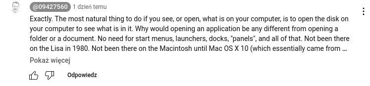

In that video, he showcases Mac OS 8 and Fedora Linux side by side, and claims that the former is more usable than the latter.
The first claim he makes is that on Mac OS you see your hard drive as an icon on the desktop, and he says that Linux not having it is bad.
Linux - just like any POSIX-complaint operating system - treats every device as a file. Hard drives, floppies, USB sticks, and all the others are just files sitting in the /dev
directory, that you can mount, but you DO NOT have to.
And as for the nice graphical shortcut, it pretty much depends on the desktop environment and/or distro you are using.
Some Mac-cloning distros have a shortcut to / on their desktops.
But this is wrong. The / directory is the place where the root filesystem is mounted. Unlike on Windows or Mac OS, on Linux you can mount any drive to any directory
on your file system. For example, I have a separate partition mounted at /home, different from the rest of the filesystem.
Saying that "/" is the hard drive would be simply a lie.
And you cannot get rid of that. This whole directory structure is specified in the POSIX specification. To get rid of it, you probably would need to write your own OS.
Then he proceeds to explore /usr/bin in a graphical file manager, and he says it's bad these applications have no icons, no publisher info etc etc.
Because they were not meant to. These are the binaries, and - according to the ELF specification - they contain just the binary code. The assets are elsewhere.
Usually in /usr/share/{app name}
Next, he looked into the app menu, and was "worried" where are the apps from.
They are in /usr/share/applications
It presents as follows:

Later, he claims that:

Well, Linux functions differently. Mac applications are just directories, that's why you need to pack them to a .zip or .dmg to upload them any where.
There is no application signing, because unlike on Mac, on Linux everyone can just take GCC, Clang or TCC and create one's own application.
I agree however with Probono's claim that putting everything in the title bar is bad.
That's why I don't use GNOME. I just use MATE. Don't blame entire Linux for what GNOME does.
GNOME does many bad things, but it does not mean that Linux is bad.
Thanks for reading.